人生又有几次重播的机会呢？——Little Busters EX随感（剧透慎入）
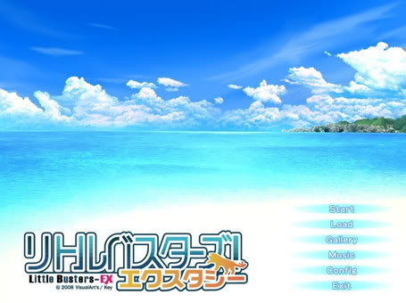
人生，大大小小的事情，又会有几次重播的机会呢？或许一次，或许一次都没有。失去了，才知道珍惜，而追悔莫及，如果，能够重新拥有，那更好，可是，如果就此覆水难收的话，剩下的只有痛苦与决望。所以，珍惜日常而又普通的每一天，你会发现，在此之中，会有很多的快乐在等待着我们去体会、去珍惜。
key社作品Little Busters!介绍
摘自wiki百科:Little_Busters!
《Little Busters!》（リトルバスターズ!）是日本游戏品牌Key于2007年7月27日所推出的恋爱冒险游戏，该游戏也是Key成立后第六款WindowsPC平台游戏。拥有不同于《Kanon》、《AIR》、《CLANNAD》的风格。PC十八禁版《Little Busters! Ecstacy（Little Busters! EX）》（リトルバスターズ！エクスタシー）于2008年7月25日及9月26日发售，移除十八禁元素后亦移植到多个平台上发售。官网
由J.C.STAFF负责制作、山川吉树担任导演的26集电视动画于2012年10月至2013年4月播映。2013年8月发售OVA。2013年10月至12月播映第二季13集电视动画《Little Busters! 〜Refrain〜》。2014年1月至7月发售共八集OVA《Little Busters! EX》。リトルバスターズ！ＥＸ动画制作
神北 小毬 的故事
神北小毬（かみきた こまり）声优：柳濑夏美/牧泉美
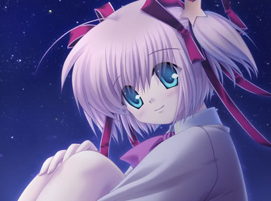
角色曲：魔法のアンサンブル
现实就是梦，梦就是现实
梦，仅仅是虚无的逃避，现实被拖到了梦里，现实就是梦，梦就是现实。快乐的事情，悲伤的事情，喜欢的，不喜欢的，仅仅是一场梦一样。梦醒后，一会全都化为无。梦本来就是不存在的，梦里所发生的事情，仅仅是把一些本无联系的记忆交错在一起，形成一个理所当然的意境。梦是美的，会感受到真实的温馨与快乐；梦是悲伤的，会身临其境一般，感到痛苦与悲伤；梦是恐怖的，仿佛恶魔正在自己的眼前，狰狞的面容，狂戾的尖笑。梦正是因为往往会让自己感受到其过份的真实性，才会有时在梦醒来，意识朦胧的时候，会误以为梦是真实的，而那刚刚经历过的感受，依然满溢心胸，回味无穷。梦，一直以来，是逃避的栖身地。在梦里，可以得到自己所不能得到的东西，在梦里，可以做自己没有做过的事情。无论是好的事情，还是坏的事情，即使做一些恶作剧，也不会受到良心的谴责，因为，那仅仅是一个梦而已。梦正像一口无穷无尽的黑洞，一直不断地吸附着向前时的步伐，把那一双双向前看的双眼蒙上一层晦暗的面纱，在那一颗颗向上的心，刺进如梦幻般的美好的醉迷的箭。由蛋破壳出的小鸡，不断地成长，成为了母鸡，并又生下了新的蛋，这是一个循环，并在这个循环之中，母鸡忘记了它在小鸡的时候的事情，而新生的小鸡也在不断的成长之中，把它所经历的事情不断淡忘，直至成长为母鸡之后，再次生下新的蛋。母鸡忘记了什么，那些空缺的碎片又是什么呢？似是悲伤不愿记起，但是，明明不想记起，却又因为不知失去了什么而又悲伤。一直持续着的忘记，就如往来循环的梦一样，梦的开始，梦的继续，新的梦的开始，新的梦的继续，一直以来，没有醒过，一直在做着同样往复的梦。可是，梦终究是梦，梦终会有醒来的一天，梦醒后的是——
天真烂漫，总是充满活力，那阳光一般的笑容，让每一个看到她的人，都会发自内心地感到快乐。别人的幸福，就是自己的幸福，这是小毬的宗旨，也是她努力的方向。虽然，她有一点点笨笨的，做每一件事情，也总是好失败，但是，她并没有因为自己笨拙，自己的失败而放弃过追求。什么都不做，就什么都不会得到，如果，做了，却又得到了，那是再快乐不过的事情的，如果，做了，却没有得到，也没有什么关系，因为，自己努力过了，也争取过了，结果什么的，已经不再重要了。正是这样的小毬，才会每一天都在努力着，追求她想要追求的，而没有放弃过。
学校的楼顶是小毬的秘密基地，是她开点心大会的必要之所。所以，她本想不让任何人知道，仅仅把“秘密”隐藏在心底，在这空无一人的静静的场所，享受着平和而安心的恬静。不过，误打误撞的理树，无意间发现了这个秘密基地，也发现，原来，一直不太在意的小毬，也有这么多自己曾不知道的事情。为了保守秘密，理树可以一直来这里，而他们也成为了共犯，共同享有这个秘密。
对于棒球，小毬知之甚少，但是，她还是答案了理树的邀请，虽然，她不能为球队做出过多的贡献，但是，她想要和大家在一起，一同创造属于他们的，更多的共同的回忆与快乐。付出并不等于回报，所做的事情，也并不是每样都会完美，但是，只要有付出的心，即使做的事情再笨拙，都会得到会心的微笑，这是对于自己付出的肯定，也是心与心的传达与接受。
点心，甜而美味，小毬喜欢甜的东西，因为甜使人快乐，而甜的东西与大家一同分享的话，那么，自己所得到的快乐，会比一个人的时候多上千倍百倍。甜等于快乐，而快乐等于付出。小毬在福利院，成为大家快乐的源泉，而大家也把自己的点心送给小毬，让她也能够在品尝点心的时候，得到快乐。所以，快乐是彼此的传达，因为别人快乐，自己也会感到快乐。就像大家围在一起吃着美味的甜点的时候，因为共同分享，因为大家相伴在一起，孤独、悲伤、痛苦都被快乐驱逐出境，在这里，存在的仅仅是快乐与幸福，并没有其他的唱着反调的东西能够一直留在这里。想把自己正在享受的东西，也分享给大家，这就是快乐。
那是一个一直埋藏在心底的秘密，那是与这个世界并不相同的，另一个世界。
小毬一直做着一个梦，梦中的哥哥的温暖，仿佛是真实一般。她自己想不起来自己倒底有没有这样一个哥哥，那过去的回忆，仿佛是雾中的世界，看不见对面的是什么，仅仅是朦朦胧胧分辩不出形态，似真又似假。明明仅仅是一个梦而已，梦醒后，一切又全都回归了现实，可是，在小毬的心里，仿佛心中缺少了什么，感到失去了什么，所以，她想要找回过去的回忆，想要知道，自己倒底有没有这个哥哥，那个梦，仅仅只是一个梦而已吗？起初的理树，并没有太过深思小毬说的那个梦，他是不敢再去深想，也不想探究出事实，因为，如果，小毬的哥哥还活着的话，仅仅是因为一些原因而暂时离开了小毬，那么，还算是一个好的结果，重逢的快乐，也是理树想要看到的。不过，不得不去想到的是，如果，小毬真有那么一个哥哥，而那个哥哥又早就已经离开了她的身边，如果，让她想起这个事实的话，她一定会感到非常的悲伤，现在的笑脸也将会被泪水所取代。理树不想看到那样的小毬，所以，他也一样在逃避着。在福利院，无意间遇见的小次郎，使理树更加的确信，在小毬与她的哥哥之间，一定是发生了什么悲伤的事情，所以，小毬才会把他忘记。那么，既然小毬不能想起，他又使小毬寻回了记忆，并一直沉浸在悲伤之中，这样做并不会得到什么好的结果，反而连他自己也会悲伤。所以，理树一直回避着这件事情，就当什么都没有发生过一样。
“如果只是出于好意的话，就不要再问了”
这句话使理树决定放弃继续寻求的问题的答案。不过，逃避终究不能一直持续下去，逃避的事物，也终究会有露出它真面目的一天。当小毬最不喜欢的雨天，下起了雨的时候，当小毬最不想看到的事物被看到的时候。过去一直逃避的事情又一次想起。
雨，如丝一般，划落悲伤，低低吟泣。而雨中的少女，被这悲伤集成的雨，一点点地浸湿着衣服，一点点地被夺去体温，被夺去活力。仿佛听到一声崩溃的绝响，一直以来所构建的东西终于土崩瓦解了。过去的一切，仿佛是泥制的城堡一样，被雨水一冲刷，仅剩得软而面目全非的污泥，不再有任何的价值。
小毬怎么了，为什么会这么悲伤，那曾经的笑脸又到哪里去了？失神的双眼，僵直的身体，最终不得不由理树牵着她的手回到学校。即使让她去泡泡澡免得感冒，她也仅仅是失神的点点头，不知何时去，又不知何时回。仿佛在理树的眼前，仅仅是小毬的影子，没有一丝光彩，仅仅是一片黑暗。
那是过去的梦，那是梦的开始，梦的循环……梦的结束
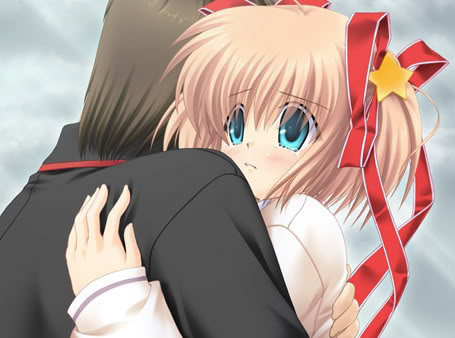
梦终会有醒来的一天，或快或慢。
不想让自己离开的事实使小毬感到悲伤，便编了一个善意的谎言，自己和小毬在一起的时光，仅仅是一场美丽的梦，梦中即使面对分离，也只不过是一场梦而已，梦醒后，一切便全都消失淡忘。可是，这个梦，自小毬做的开始，便一直没有醒来过。就像母鸡与鸡蛋的故事一样，如此往复，不断淡忘，又不断做起。
现实与梦的混淆，哥哥与理树的重叠。倒底要做何选择，问题摆在了理树的面前。明明已经走向了不可回归的路，明明心里还是得不到答案，不过，在理树的心中，他一直坚持着一件事，那就是让小毬从梦中醒过来
。
提出了问题，也给予了答案。一切都在绘本中体现了出来。还是母鸡与蛋的故事，最终，当母鸡面对蛋的时候，终于想起了一切。
悲伤，是每一个人不得不去面对的事情。没有永恒的事物，有新生，就会有离去。而随之而来的悲伤，或许会让人一时之间迷失了方向，而悲伤的事情，也不是想忘记就能忘记得了的。所以，由于不想体会悲伤，便想到了逃避，把自己圈在了梦里，与现实隔绝。就像一场梦一样，梦中的悲伤仅仅是虚无而已，并不会太过在意。不过，梦终会有醒来的一天，梦醒后，依然会去面对现实。所以，即使悲伤，即使痛苦，也要去忍耐，去面对。因为，悲伤之后，是坚强的笑容，和比悲伤更多的快乐。仅仅因为悲伤而失去更多的快乐，是无法使自己幸福，也不会给身边的人带来幸福。所以，抹去泪水，重新微笑，用自己的笑容再次感染着大家，让每一个看到自己的人，也都由衷地微笑，由衷地快乐，这才是真正的幸福，真正的、现实的“梦”。
能美 库特莉亚芙卡的故事
能美 库特莉亚芙卡（能美 クドリャフカ / のうみ くどりゃふか）声优：金子明美 / 铃田美夜子 /若林直美
角色曲：えきぞちっく·といぼっくす
就像一个被废弃的齿轮一样，失去了作用
不属于任何一方，不被任何一方接受。就像一个被废弃的齿轮一样，失去了作用，便别新的齿轮所替代。一直以来，被当做是一个奇怪的存在。明明知道，大家对自己并没有恶意，可是，那些像是看见异类的笑声，还是一次次地刺痛着自己的心内。明明是一副外国人的样子，可是，行为举止却没有一丝像外国人的地方。明明想要一直努力，明明以母亲为憧憬的对象，可是，自己太过笨拙，即使再努力，也无法成为母亲那样伟大。光芒，刺得双眼无法睁开，便把心中洞察一切的双眼紧闭。既然没有捷径，既然再努力也是徒劳，索性开始逃避。就像紧闭双眼，就会看不见自己所不想看见的东西一样，自己一直逃避着的事物，并没有离开自己，而是依然在自己的眼前，只是自己不想看见而已。逃避是欺瞒自己的内心的行为，骗欺的终究是虚假的，那份一直埋藏在心里的感情，是无论如何逃避，无论如何欺骗也无法忘记的深深的依恋。齿轮，破碎的碎片，曾经是完整的整体的一部分，如今，虽然已经从整体的身边离开，表面上看来，仅仅是无用的，可以随便抛弃的东西。可是，它们现在存在在这里，就表明它们曾经也是有过价值，而它们如今也依然彰显着它们的价值。世界的洪流，一步步地向着未知的未来前进，正是有这些不断替换而上的齿轮，不断替换而下的齿轮，世界才能稳步前进，才能不断发展。如果，替换而下的齿轮失去了存在的价值的话，那么，它们曾经所付出的又算什么呢？齿轮的价值并不体现在一处，而是在方方面面都在创造着价值，即使不能在整体上创造价值，也能在其他的方面同样地创造着价值，改变着一切，就像能美一样，用爱与思念去改变一切，去创造一切。归根结底，人类的价值正是创造幸福，大家的幸福，自己的幸福。
亚麻色的长发，周游世界，并不固定住所， 明明是一副外国人的样子，英语却很不擅长，反而对这里的习惯非常地了解。在大家的眼里，能美仿佛是异类一般。明明行为举止应该像一个外国人的样子，可是，她做的事情却和这里并没有什么分别。这就像是装酒的瓶子，里面竟是可乐一样，非常的不谐调感使大家以看待怪人的眼光去看她，也很少有人接近她，和她做朋友。作为被特殊对待的能美，并没有一丝失落的样子，她有点笨拙，但是，她非常地努力，即使不断失败，她也没有放弃向上的心。
能美是孤独的，孤独得仿佛是她头上那个蝙蝠发饰的缩影，不被任何一方接受，只能一个人在黑夜里独自飞翔。不过，能美却并不孤独，自从和理树相遇，自从加入进Little Busters后，能美便在和大家的接触之中一同欢笑、一同努力，为着共同的梦想前进。在这个过程中，能美也交到了很多的朋友，大家也在不断地帮助着她、关心着她。这里的人，看待她的眼光和别人并不相同，并不是那种看待异类的眼光，而是以朋友，看朋友，真挚的眼神，没有一丝虚假。
帮助能美考试大作战是一个非常好的例子。大家为了能让能美的成绩有所提高，而帮助她补习。虽然，在这个过程之中，能美和理树在一起的时间较多，但这也是能美所期待的。这个第一次见到自己，竟没有嘲笑自己的人，在能美的心中，早就已经成为非常重要的存在，和理树在一起的每一天，都充满着快乐，仿佛时间流逝得太快，仿佛补习的时间太短，每每分离的时候，心中都会升起一丝寂寞与失落，而且，补习的时间终究会结束，那样一来，和理树单独在一起的时间就会减少了。关于这点，能美一直都挂在心上，无法释怀，其实，在理树的心里，也是有着同样的想法，只不过，他太过害羞没有说出来而已。
少数的，并不会代表全部的，所以，即使受到Little Busters的朋友的关怀，也并不代表已经被大家接受。对于别人来说，能美是一个笑点。一个长得像外国人的人，竟不擅长英语，那么，她的英语考试的成绩自然会成为大家的谈点，而且，久而久之，还下了赌局，把伤害她的事忘到脑后，只顾着自己的欢乐与私心。而且，她们还来到理树的身边，希望能够得到一些可以了解结果的情报。恶意中伤的话语，随意地从口中流出，并没有一丝的自觉，反而还乐在其中和大家讨论起来。用别人的短处，作为逃避自己的缺陷的手段，其实，只不过是在自欺欺人而已。就像幸灾乐祸的心里一样。并没有想到，如果，那个被谈论的对象是自己的话，那么，此时的话语又从别人的口中说出，那个时候，自己还能保持这样的心态吗？
自己被如何地谈论，对于能美来说，早就已经习惯，已经无所谓了。可是，如果把自己最喜欢的理树也牵扯进来的话，能美就不能再那样坦然面对了。她是异类，她接受，理树却因为和自己在一起，也受到大家的嘲笑，这一点，能美不能接受。理树在她的心里，是非常重要的存在。就仿佛是天上的白云一样圣洁，不容一丝玷污，而且，那个玷污的原因正是自己。所以，能美开始躲避着理树，她不想再给理树带来麻烦，受到困扰的有她自己就够了，不能再把理树拉进来一同受这个罪。不过，能美想错了。理树和她在一起，并不仅仅是想要帮助她，而是和她一样，非常地珍惜和她在一起的每一分每一秒，所以，理树并不理会别人的嘲弄，反而还非常的生气。从他的种种表现可以看出来，理树非常地在乎自己。一想到这里，能美非常地高兴。
心与心的相通，经由古老的仪式，传达出了对于对方的爱意。从此，俩个人之间便由一条无形的纽带联系在一起，即使未来远隔它方，心与心也能相通。这就是羁绊，名为爱的羁绊。
能美的身世并不简单，这从她追随祖父游走世界就可以看出来。而且，她的出生地也是一个不太常听到的岛国。她的过去，她的回忆，她一直隐藏在心里，除了她自己，这里没有一个人知道。那个不被打开的箱子，那个一直关注着电视新闻，忧心忡忡的身影，仿佛要有什么事情发生了一般。那个隐藏在箱子里的秘密，就像是一片黑暗的风暴一般，正在一步步地吞噬着能美与理树平常而又幸福的生活。
终于，风暴开始了——
故乡发生了动乱，不知亲人安危如何，想要回去，可是，如果就此离开，或许就不会再回来，也就不会再和理树在一起。所以，面对着回去与不回去的纠结一直纠绕着能美。无法做出选择，两边都很重要，两边都不想舍弃。就像面对分叉路口无法抉择的情况一样。既然走到了这里，回头已经不可能，如果要从中做出选择的话，很难保证未来不会后悔。所以，只能一直呆在原地迷惘、踟蹰。
能美为此而痛苦着，理树也一样为此而痛苦着。他又未尝不想让能美留下来和自己在一起。如果能美回去的话，或许再也不会回来，而他们快乐而又平常的时光也将要宣告结束。所以，能美的痛苦与迷惘理树也有，只不过，他与能美不同的是，他必须在能美的背后推她一把。如果，能美一直留在这里和他在一起。理树一定会抱憾终生，而能美也将会抱憾终生，所以，作为能美最爱的人，作为最爱能美的人，理树忍着痛苦，忍着对于未来的结局的恐惧，为能美做出了选择。
回去吧。
能美走了，留下约定后，走了。她回到了那个动荡不安的故乡，那里充满着不安与暴动，她的人身安全也是一个问题。而在这边的理树，只能由电视新闻得到她那边的笼统的消息，这是多么强烈的反差，平静的校园里，播放着暴动的画面。同一个时间，不同的地方，不同的心情与态度。
理树收到了能美的短信，悬着的心放松了下来，能美没事真是太好了。不过，事情并没有向理树所期望的那样发展。那次断掉的电话，使理树得知，她发生了什么事情。这里已经再也得不到那边的消息，发给能美的短信也没有回复，他只能在这里干着急，什么也做不到。
什么也做不到，就像一个没用的齿轮一样。
这是能美与理树当时相同的心态，面对无能为力的命运，只能喟叹自己的无能，只能在一起听天由命。不过，如果仅仅这样下去的话，约定是无法实现的，所以，那个风暴的箱子，不仅仅把风暴带来，也把解决风暴的答案留在了那里。
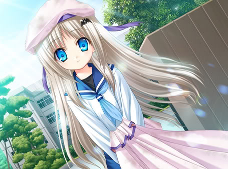
传达给你
联系着俩个人的纽带，那无形的羁绊，由那个没用的齿轮，把自己的心声传达给了对方。没用的齿轮真的没有用吗？那条束缚着能美跑向未来幸福的索链真的那么劳固吗？由理树的手，把齿轮传给能美，并由能美之手击碎束缚，奔向那广阔而青色的天空。能美的双眸是青色的，她所看到的未来也像这片天空一样，自由而广阔。
三枝 叶留佳 的故事
三枝 叶留佳 （さいぐさ はるか）声优：铃木惠子/ 凉森ちさと
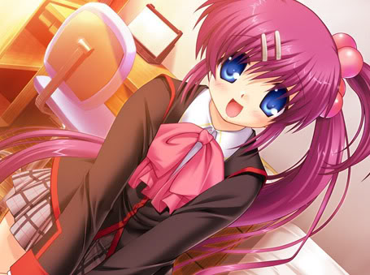
角色曲：騒がし乙女の忧愁
就像是一场可笑的闹剧一样
一直以来，做为比较的道具，并没有反抗的余地，只能听从家族的筛选。既然不能分出谁才是“肮脏的血统”，便准备根据个人的表现来主观臆断能够继续的人是谁。而那个选中的人，将会受到好的待遇（表面），另一个则会被当做没有用的废品一样处理。就像是曾经喜欢的事物，一旦被比它更好的东西所取代，这样一来，它就失去了拥有的价值，成为了一个可有可无的事物，无论它在这里碍眼，还是它消失，对于自己来说，都不会造成任何损失。就像这种心态一样，叶留佳成为了可有可无的存在，她的作用已经失去，她在里，反而成为了他们发泄情绪与不满的对象。吃饭不准说话，一旦违抗，便会受到“鞭打”，即使再喊疼，即使再请求，击打的手也不会留有任何情面。就像是一只仅仅听从命令的机器一样，只有符合了相应的指令才能住手。这种冷血的态度，所抱负的东西，仅仅是陈俗的习惯，还有那可笑的血统与面子。说白了就是虚容心，自认为高贵不可亵渎，就像皇帝的新衣一样，自我感觉良好，其实背地里已经受到很多人的嘲笑。固执，不想进取，以为守护住已经被时代的进步所取替的习俗是多么神圣的事情，疏不知，这样一来，给后代所带来的痛苦是多么的强烈。叶留佳心中的伤、佳奈多心中的伤、还有她们的俩个父亲一个母亲心中的伤。明明想要对方幸福，可是，事情却往往并不如自己所愿。谁都没有幸福，就像是一场可笑的闹剧一样，百般努力所做出来的菜肴曾是一盘焦炭，结局是黑的，是苦的，是错的，是对的。这其中，谁做错什么了吗？谁是对的呢，谁又是错的呢？
无厘头，总是违反校规，经常被风纪委员们追得四处奔跑，喜欢恶作剧，平时总是吵吵闹闹的样子，叶留佳给大部分人的印象就是一个不良学生，而她的所作所为，也经常被大家无视。就像是看习惯了的东西一样，明明是与众不同的，也不会再有任何的吸引之处。所以，叶留佳的生活一直围绕在类似于“警察抓小偷的游戏”之中，她总是以反角的角色给那些风纪委员带来麻烦，她总是不遵守相关规定，她总是做出一些出格的事情。于是，渐渐地，她在大家的眼中被深刻地固定了印象——无论她做什么事情，都是不对的，都是有所图谋的。
就像狼来了的那个经常说谎的孩子一样，总是做出相同的事情，就会在每一个受到欺骗的人心中形成固定印象。人是不可能一直在一处失败的，人具有学习的能力，所以，认识到这件事是不对的，是错误的，便给予概念化，不再理睬。而叶留佳的印象在那些风纪委员的心中早就已经形成了固定的概念，并把它做为“有色眼镜的底片”来看待她。她所做的事情，都会对学校产生不利，所以，当叶留佳在自动果汁机前连续走大运中奖的时候，看到的风纪委员则一口咬定这是叶留佳使用什么不正当的手段所得到的。所以，即使她再为自己辩解也是没有任何用处的。还有，在走廊见到的和父母走散的小女孩（在学校里和父母走散，老师的孩子？）明明想帮助她，却被看到的风纪委员认为这是诱拐儿童的行为，还加上了个很OTL的借口（那些风纪委员真让人无语，想像力太丰富了吧）。这些就是大家对于叶留佳的固定印象，她在那些风纪委员的眼中，早就已经被打入了黑名单，永远也无法正身改变印象了。
每一种行为都有使之付诸行动的目的，而叶留佳做这些事情的目的又是什么呢？她喜欢恶作剧？她是小孩子吗？某种意义上来说，是点像，不过，即使是恶作剧，也有做出这些事情的动机。如果，仅仅是几次想要玩玩的心里的话，几次也就够了，如果长久以来一直这样下去的话，那个人的心，一定是隐藏着什么不为人知的秘密。不然的话，她是不可能一直这么乐此不疲地与风纪委员对抗的。
一个不被需要，没有容身之地的孩子。
佳奈多与叶留佳的关系，就像水与火一样不可调和。没有中间的立场，只有胜与负。叶留佳看到佳奈多的时候，都会是一副怨恨的眼神，而佳奈多见到叶留佳也总会冷嘲热讽，很明显，她是在故意激怒叶留佳，把话说得如此的刺耳，即使叶留佳是一个再坏的孩子，也不可能如此不留情面的中伤。所以，这种违和的关系，在此之中一定是有什么秘密隐含其中。还有叶留佳的父母。从他们的表现上来看，还算是温和，可是，当叶留佳发现父母回来的时候，她的表情很奇怪。即使当时情况，理树和她单独在她的房间里，她怕引起误会，这倒情有可原，不过，她的表情并不是指那方面的事情，而是感到深深的厌恶与痛苦。她为什么会这样？她的父母对她不好吗？从饭桌上的交谈来看，明明是叶留佳对他们的态度很差。那么，能让孩子如此痛恨父母的事情，这其中一定是内有什么隐情了。
仿佛身处的世界只不过是与自己无关的电视背景一样，没有容身之所，不被任何人需要，无论是父母、同学，都像是一个个没有感情的摆设一样，用一面玻璃，挡住了一切的亲情、友情。明明是如此之近的距离，相差的却是真实与虚幻。叶留佳就像是一个无可家归的孩子一样，带着迷惘的眼神，憎恨着自身的命运。就像是破罐破摔的决心一样，把一切的错误都指向对方，对于自己的存在的价值就是憎恨，维持住几近崩溃的自我。
火的上面浇上油，火焰会燃得更为强烈，而在事态急转直下往坏的方向发展的时候，偏偏一些关于叶留佳不好的传闻开始传播开来。每一间教室都有关于她父亲的相关消息的报纸，每一间教室的黑板上都写着叶留佳的名字。一时间，大家对于叶留佳无视变成了窃窃私语与冷落。仿佛她是一个肮脏的东西一样，如果有谁碰到她的话，如果有谁和她有所牵连的话，都会倒霉，都会碰脏身体。无家可归，没有容身之所，如今，连学校也不再是她能够安心呆在这里的地方了。她就像是一座小岛一样，不断地被海水吞噬，她的容身之所，也在一步步地被掠取着。
这一切都是谁的错？
把心中的秘密公之于众，就像把心中的伤疤放到太阳下面暴晒再洒上盐一样。那份绝望与痛苦使叶留佳再也忍受不下去了。她的心崩溃了，她恨一切，她的父母、她的姐姐，还有那个让自己来到这个世界的命运。如果，她没有降生在这个世界上的话，她就不会有这方面的痛苦了。如果，她就此消失了的话，或许就会像一个坏掉的齿轮一样，失去她并没有什么变化，反而或许会让整体更加流畅地动转。所以，她在心中否定一切，甚至是自己。如果，再这样一直放任她的话，她的心就会被无尽的黑暗所吞噬，一直爱着她的理树，必须要为她做些什么，才能一直守护着她。
她孤独吗？她不被人需要吗？她没有容身之所吗？这段时间里，一直陪在她身边的理树给出了他的答案。她并不孤独，因为有他在身边，她并不是不被人需要，至少在这里，理树一直爱着她，她没有容身之所吗？即使没有，理树的身边就是她温暖的家，会一直守护着她。而且，叶留佳感情太过去偏激，至少她的父母是真心爱着她的，只不过，她的心里一直在寻找着谁对谁错，如果，谁都没有错的话，她还有什么存在的意义了呢？她的心已经被憎恨所占据，理性无法再做出正确的判断。她想要调查出谁才是她真正的父亲，难道当初的选择是正确的吗？如果她并不是那个人的女儿的话，她又能怎样呢？她给不出答案。而这个答案却从佳奈多的口中得出。即使知道了答案，即使她并不是那个人的女儿，她所受的苦就能抵消了吗？过去的一切就会消失了吗？只不过是把无意义的“球”在自己与对方之间不断地抛弃一样，谁是不被需要的，谁是被需要的，弄明白这些真的有意义吗？
谁做错什么了吗？谁是对的呢，谁又是错的呢？
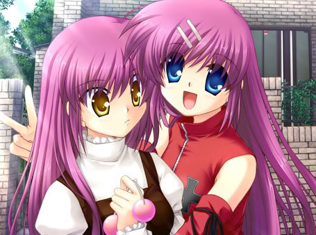
幸福就在你我之间
谁都没有错，谁都想要让对方幸福。父母为了儿女想要逃离这个封闭的场所，却反而因此让孩子深陷痛苦之中；姐姐为了妹妹忍受痛苦与憎恨，可结果，却使俩个人都更加地痛苦与悲伤。谁是谁的孩子，这其中的结果已经不再重要；谁是对的，谁是错的，也只不过是自己一厢情愿的臆断而已。大家都在在意着对方、关心着对方，为了使对方减少痛苦而使自己更加地痛苦。其实，走错的路，即使无法回头，也会有新的路可以走，路并不只有一条，脚步也不能一直止步不前。我们只能一步步地向前走，才会发前新的、正确的道路。即使现在阴云密布，谁又能保证未来不是一片光明呢？
来谷 唯湖 的故事
来谷 唯湖 （来ヶ谷 唯湖 / くるがや ゆいこ ）声优：田中凉子/ 一色光
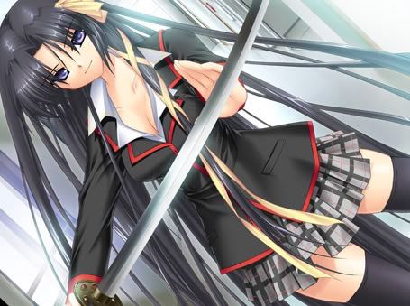
角色曲：心色綺想曲
那个梦即美丽又悲伤，那个梦是开始是结束
隔窗而望的世界，阻隔了自身与外界的接触，无法体会到何为快乐、何为痛苦、何为愤怒、何为高兴。就像是一具没有灵魂的空壳，没有意义地在这个世界里存在。梦与梦，本不相干的两个世界，并没有任何的接点，就像擦肩而过的行人，很难有任何的交集。自身在这个世界里，并没有真实的实体，用拒绝的围墙把自己与外界阻隔开来，外面的世界，与自己没有任何的关系，即使身在外面的世界里，自己的心却一直沉浸在自己的梦里。那是梦，那是愿望，那是自己唯一的栖身之所。那个世界有停滞、有流转。那里面的一切，与这个世界并没有任何的区别，只不过，就像是早已排好的戏剧一样，一切都是按照剧本上的程序变化着，某些事情之外的一切事物都会被这个世界自然地无视。明明眼前看见的东西，对于别人来说，这些并不存在。就是这样的世界里，曾阻隔一切外人介入，这是自己的内心世界，那里面蕴藏着自己沉封的感情，那是在外面的世界里别人所无法看到的真实的自己。不会有人走进自己的内心，自己的世界，自己也不会走进别人的内心，别人的世界，明明是这样的事情，可是，当有一天，他的告白使一切全都混乱的时候，一直紧闭的心扉终于被他打开，而他也终于走进了自己的世界里。封闭，隔绝，在那里是自己的愿望，真实的自己。不过，那终究是一场梦，那是离结束不远的梦，那个梦即美丽又悲伤，那个梦是开始是结束——
一个大姐姐一般的存在，喜欢捉弄人，沉着冷静，那没有一丝表情的面孔是如此的冷艳。学习成绩优秀，无论哪件事情都能做得尽善尽美。正是如此完美的人，在她的身上也是有不完美的地方。她没有真正快乐过，也没有真正生气过。她总是一个人坐在窗边静静地看着书，总是一个人形单影只地独处。她没有什么朋友，她也不会与任何人过于亲近。仿佛是一具能够行动的雕像一般，在自身之中，隔绝着与别人的联系。
与众不同，就像是稀有的东西，有的人喜欢，有的人感到害怕、讨厌。某一样使人崇拜的事物，正因为自身的神秘，才会引起另一些人的恐惧。有恐惧，就会有反抗的心里。渐渐地，反抗变成了厌恶，眼中钉肉中刺，不想看到的存在。所以，便想尽一切方法使其屈服，能够让自己的恐惧化为胜者的自负，这是弱者的自欺欺人，也是内心之中黑暗的一面的最为卑劣的感情。之所以称为卑劣，是因为，即使和相关人比较亲近的人，也会成为其报复的对象，无论他无辜不无辜，为了达到自己的目的，便会不择手段，牵连其他也在所不惜。这种时刻，在其心中，已经没有了一丝的理性，而是不断扩大化的仇恨。虽然，连她自己也并不明白如今的仇恨从何而来，只是一步之下，掉进了无尽的深渊，在黑暗之中不能自拔。
起初的恶作剧，到后来，性质越来越恶劣，即使被发现自己的动机，也不罢休，反而越做越过份，并没有停手的样子。做为受到来谷牵连的人，理树起初选择的是沉默，他并不想使事情变得过于复杂，所以，便认为她们闹够了就会有收手的一天。可是，理树想错了，她们并没有因为理树的沉默而收手，反而越做越狠，从当初的在鞋柜里放图钉，到后来放垃圾，最终，理树也无法忍耐了，他想要和当事人好好的谈谈，或许能够和平的解决，让她们放弃。不过，理树把她们想的太过于美好。她们不但没有悔改的意思，反而还拒不承认。当来谷把证据用广播播出的时候，她们便像是恼羞成怒的恶犬一样，想要以狂吠做最后的抵抗。不过，狂吠终究是恐惧的写照，当忍无可忍的来谷用冷静而又恐怖的声音对她们警告的时候，当来谷以惊人的气势把门踢成两截的时候。她们那嚣张的样子终于化为沉默，连再呆一秒的时间的心思都没有地逃之夭夭了。
这是一个契机，使理树喜欢上来谷的契机，虽然，那份感情起初仅仅是崇拜而已。不过，那是一个开始，他想要和来谷在一起，他感到来谷酷酷的，非常地帅气（其实，从这里开始，理树就注定了与来谷在某些方面互换了立场）。
理树与来谷之间的感情之路注定了并不平坦，因为，来谷自己也说过，她并不知道何为快乐，也不知道何为痛苦。她对于爱情方面的事情也并不了解。即使理树与她约会，即使和她一起去看烟花，她也并不了解理树的心意，仅仅把这些事情当做是好玩的游戏（不过，来谷从这时开始，已经体会到了何为快乐，这是一个好的开端）而已。所以，理树如果不直接地把自己的感情表达给她的话，那么，她是无论如何也不会知道的，即使理树再努力。
告白的话语从理树的口中流出，对于被告白的一方，来谷起初是惊讶，到后来，就成为了委婉的拒绝。她的拒绝与普通的拒绝不同，她并没有明确地表示出她是不是喜欢理树，而是因为某些事情，她不能接受理树的爱。受到失恋的打击的理树，当时并没有想到这一点，而是非常失落的把这件事情告诉了恭介他们，当他们劝说理树放弃的时候，摆在理树的面前的是两个选择，一个是不顾一切地追求，另一个是为了整体的团结而放弃。最终，理树选择的是继续拉近他与来谷之间的距离，而不放弃。
起初的形单影只，如今有朋友相伴，曾经并不知道快乐为何物，自从和理树相遇以来，她体会了很多她曾不知道的事情。就像那场烟花一样，带给来谷的震撼既新奇又感动。所以，她也不想就此失去理树带给她的快乐，可是，和他在一起就能够一直快乐下去了吗？就像路边的花朵，为了能够一直享有它的美丽，便把它摘回家，可是，独占后的时间并不长久，之后所要面临的将是失落与悲伤。
有一份永恒叫瞬间...有一种爱叫放手
那是一个梦，一个实现自己愿望的梦。在那个梦里，她可以和理树一直在一起。那里的世界，不会有人注意到她与理树的事情，也不会有人打扰到她们。曾经，这个世界里只有她自己一个人，如今，理树来到了她的世界里，让她体会到了曾经所不曾体会过的快乐，当然，梦终究是梦，梦也终会有醒来的一天。虽然是一个梦，但是，曾经所不知道的悲伤与寂寞她知道了，曾经所不知道的痛苦与诀离，她也知道了。那曾残缺不全的自己，如今终于成为了完整的整体。这一切都是从和理树相遇开始的，不过，这一切也会因为和理树相爱而结束。就像是一部感人至深的电影一样，终会有谢幕的时刻，或许，这份感动随着时间的漫漫流逝也会渐渐淡忘，不过，这一刻，仅仅这一刻，自己并没有后悔过。这是自己的选择，结局无论会变成什么样，自己也会一直承担下去，无论是悲伤，或是快乐。
一些感想：通完来谷线，一时之间感到有点混乱，明明俩个人相爱了，为什么忽然之间时间错乱了，日期一直停留在6月20日这天不变。故事里，来谷说这是她的愿望，也是一场梦，那么，既然是来谷的梦，理树却是有自己的意识，而不是做为来谷梦里的一个角色而已。而且，故事的结局（指TRUE END1，码文时还没有通TRUE END2），来谷面对手机里的短信的陌生的名字也想不起什么，这样来说，就是她忘记了理树的存在，那么，倾斜的齿轮打破的又是什么呢？是时间吗？把时间切割开，交错在一起，形成这种不正常的现象，那么，来谷的梦与愿望又是怎么回事呢？如果打破的仅仅是时间，来谷为什么会对此了如指掌，而别人却并不知道呢？对于这条线我有很多的疑问与不解。所以，通完这条线后，就去找云彼谈了一下，他猜到，这或许是两个世界，理树所在的世界与来谷所在的世界。这两个世界是独立的存在，只不过，通过理树对于来谷的爱，理树闯进了来谷的世界里，这使得原本的平衡发生倾斜，使时间错乱，而两个世界也不得不为彼此的调整开始发生变化，那变化就像是回到过去的状态一样，来谷开始渐渐地忘记理树，而理树也一直周而复始在停留在6月20日这一天里不动。当然，这些也仅仅是我们的臆测，或许还有其他合理的解释，或是在我还没有通的TRUE END2里能把一切交代清楚。所以，希望知道的人能够把你们的答案告诉我，以解我心中的疑惑。
西园 美鱼 的故事
西园 美鱼（にしぞの みお ）声优：荒井悠美 / 柚木かなめ /巽悠衣子
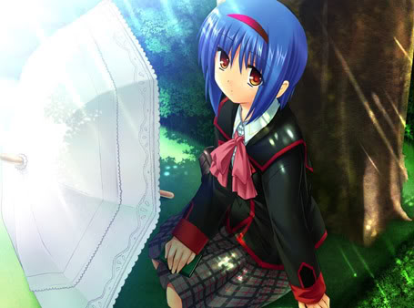
角色曲：光に寄せて
令白鸟哀叹的天空之蓝，无法浸染大海之青
孤独，高昂，美丽，不会与任何人交织的白鸟，在天之蓝，海之青之间独自地徘徊。那微小的白点，被阔远的蓝所吞没，如果没有仔细地看的话，是很难分辩出那细微的色差，就像是浩淼大海之中一只微小的鱼，广袤沙漠之中的蜥蜴，像是影子一样，可有可无的存在，没有太多的存在感，也没有太多的必要性。被海吞没的鱼，仅仅以宽广的深青所弥补那微小的空缺，被沙漠所掩的蜥蜴，化做无数的黄沙之中的一粒颗粒，被满眼的橙黄所取代。孤独的影子，仅仅有阳光才能显现出它的原形，才能发现它与自己相伴。它真的与自己在一起吗？一直以来，自小时候，到不断地成长，随着阅历的广博，开始用理性的解答取代儿时的幻想，那曾经与自己相伴的朋友，如今，已经变成了理所当然的存在。即然是理所当然的，就会容易被忽视，被遗忘。是不是很久没有注意过自己的影子了呢？它走在自己的身边，它与自己同行，但是，自己还是会感到自己是孤独的。一个个孤独的人体，就像是蓝天与白云之间，既相望，又无法交融。天之蓝，云之白，都在彰显着各自的存在，谁也无法包容谁，谁也无法取代谁。就这样以各自孤独的个体来体现着共存的美好。单独的个体，仅仅是单调的存在，是看不出什么特别之处，不过，无数个单独的个体，层次累加起来，就会由普通，透明，容易被忽视而化为深远的蓝，美丽的蓝。那蓝深邃、温柔，就像是母亲的怀抱一样，让人舒心、安详。那仿佛是家一样，温馨的涛声吸引着自己的意识与感官。对，这就是家，人类起源的起方，这就是独自的出生，身边有父母相伴，成长后结交伴旅，结婚生子，人与人的相聚，由孤独，到相遇，到相守，人与人的洪潮，汇集在一起，形成深远的蓝，那蓝来自天空，与云相映，而那云正是自己的另一伴，孤独的个体的相遇，彼此凝视的永恒。有新生，就会有消逝，有永恒，也会有变化，只有，我们在变化之中，发现永恒之处，在永恒之中，顺应变化的流转，才能发觉我们曾一直忽视的东西，那对于自己来说最为重要的东西，曾忘记过，曾忽视过，其实，它就存在于我们的身边，那些如空气一般，平常而又普通的——幸福。
撑着阳伞的女孩，总是坐在树下静静地看书，不与人接触，很少言语。像是一个影子一样，在别人无法发觉的地方，独自一个人，与仅有的朋友——书相伴。如果，理树不是无意间把球打到美鱼的身上的话，俩个人是无法熟识的，虽然，美鱼和理树在同一个班，但是，美鱼给理树的印象就是普普通通的一个同班同学而已。他对于美鱼并不了解太多，也没有理由去了解太多。就像是仅仅记住名字，但是，并没有聊过天的同学一样，美鱼是以班级为单位的大背景里的一个陪衬，一个可有可无并不影响理树生活的存在。不过，一次意外，仅仅通过一个球，使俩个人本是平行线的生活有了交集。理树开始注意到面前的这个女孩那独特的一面。她总是撑着阳伞，无论晴天还是雨天，就像是皮肤不想被阳光晒伤一样，那支伞形影不离地陪在她的身边，而与此同时，还有另一个对她来说，非常重要，从不离身的东西一直陪伴着她，那就是那本袖珍书。
从书中，可以看到真实的自己。往往会过于投入，把自己想像成故事里的主人公，并对故事的发展以自己的看法来评断，如果，故事往这个方向发展就好了，如果，最后能够和她（他）在一起就好了。明明是一个故事，却会为故事的主人公的命运感到高兴，或是悲伤。这就是代入感。美鱼曾说过，那本书里，有着自己的存在，如果，想要了解她的话，读过这本书就可以了。由书，可以了解一个人，就像是由字迹可以了解这个人的性格一样。那本袖珍书是如此的神秘，就像美鱼给大家的印象一样，捉摸不透。
孤独的身影，Little Busters的团结，形成鲜明的对比。美鱼曾对于理树的邀请是拒绝的，因为，她认为，Little Busters的环境并不适合她。她喜欢孤独，就像是天空中翱翔的白鸟一样，高昂美丽。不过，Little Busters大家所创造的快乐，却一直吸引着她。那是她不曾有过的东西，那是她有一点点期待想要拥有的东西。没有一个人不喜欢快乐，即使喜欢孤独的人，也不会舍弃快乐。大家在一起，无忧无虑地讴歌青春，那些，对于美鱼来说，就像是另一个世界的事物，可是，看到他们的笑脸，那投入的样子。美鱼也不禁想要拥有这些，可是，她并不是这个世界的人，所以，她只有羡慕，不打算加入。
美鱼对于理树的拒绝，并没有把话说绝，她也没有下定决心不加入Little Busters，她说过，如果还有机会的话，她会考虑。不过，真的会有下次的机会了吗？就像是挑战某样事物，一次次地失败，如果没有过强的毅力，是很容易就会放弃的。所以，她认为，理树下次并不会再来邀请她，所以，也没有再来的机会。不过，她没有想到，理树看到她孤独的样子，并没有放弃她的想法，他一直在寻找着机会，就像是美鱼也一直在等待着这个机会一样，机会来了，理树提出了邀请，美鱼也加入了进来。自此，美鱼成为了Little Busters的一员。虽然，她不能上场打球，只能在一边远望，但是，在休息的时候，她也会加入大家的聊天之中，也和大家互换了通信地址，这对于美鱼来说，是不小的进步。
不过，快乐的时光是短暂的，今天的相遇，注定了明天的分离。美鱼在这两个星期的时间里，和大家在一起，真的感到非常地高兴，大家一同向着同一个目标努力前进，不管结果是输还是胜，对于他们来说，这个过程是最为重要的。美鱼也想和他们永远地在一起，但是，她所剩的时间已经不多了，她为自己在即将离开的时候，能够有如此美丽的回忆而欣慰。
商业街无意的一瞥，理树感觉到无明的不安，眼前的女孩明明就是美鱼，可是，又不是她，因为，她总是带着阳伞，而他刚刚看到的“美鱼”，不仅没有带阳伞，还露出一副他没有见过的笑容。是错觉吗？理树感到迷惑。还不只这些，当有一天，从同学那里也听到了相同的经历的时候，理树确信了，在美鱼的身上，将要发生什么事情。他很害怕，他不想和美鱼分离，因为，这个仅他自己知道的埋藏在心里的感情，使他想要不断地拉近和美鱼之间的距离，并永远地守护着她。
第一次约会，也是最后一次约会。就像美丽的花朵，虽然艳丽，但是，很快便会枯萎。明明是普通的逛街，但是，在美鱼的眼里，却透着莫名的寂寞。俩个人来到海边，面对着黄昏，白天即将消逝，黑夜将会吞噬一切。仿佛是一场戏剧即将拉下帷幕，理树对面的美鱼的身影也变得淡泊。已经不知是过了多少时间，或许几秒钟，或许几个小时，当另一个声音打断他们的对话的时候，理树惊呆了，另一个少女出现在他们的眼前，那个和美鱼几乎一模一样的女孩，自称是美鱼的妹妹，名叫美鸟。
黑夜取代白昼，美鸟成为美鱼。昏蹶之后，一切都发生了变化。美鱼消失了，美鸟成为了美鱼，而且，在大家的眼里，美鸟就是以前的美鱼，对于她的变化，也没有什么意外。过去的记忆是模糊的，如果有外部因素起作用的话，很容易把错觉当成记忆。过去发生的事情，会随着时间的流逝渐渐变得模糊。这件事情是这样的吗？好像是那样的吧？正是有这种不确定性，才会对于过去给出不同的答案。美鱼戴过眼镜吗？面对美鸟的质问，理树一时之间也迷惘了，她戴过眼镜吗？戴过？还是没戴过？记忆往往会随着外部因素而得出不同的答案。明明没有过的事情，会顺着引导成为有过的事情。所以，不断淡忘的美鱼的记忆，使理树非常地痛苦。他不想忘记美鱼，他要记住她。
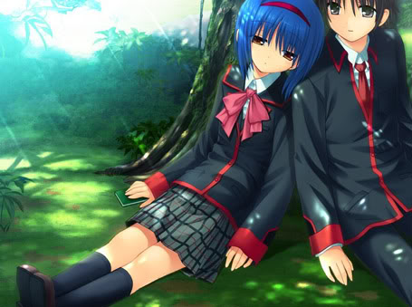
她一直在寻找着天之蓝，而那天之蓝其实就在她的身边
天之蓝，海之青遥相互望，彼此相守
其实，记忆正确与否已经不再重要，重要的是，美鱼这个人确实存在过，而他也一直喜欢着她，这份心意曾经存在，现在存在，以后也将会一直存在。无论眼前的美鸟如何错乱他的记忆，无论大家都把美鱼遗忘，他也会一直记着美鱼，这个孤独、高昂、美丽，不会与任何人交织的白鸟。她一直在寻找着天之蓝，而那天之蓝其实就在她的身边，那就是理树。俩个孤独的人，正因为彼此无法交融，才会最终走在一起。就像是天之蓝，海之青遥相互望，彼此相守。普通的生活，叠加在一起，生活才会变得越发美丽幸福。
令白鸟哀叹的天空之蓝
无法浸染大海之青
相互映照
与海之接吻
令夕阳
无法行动
鸟翔于天
停滞不前
乘上风 用白之羽翼 与君同行
青色缝隙间的
常夏之岛
棗 铃与直枝 理树 的故事
棗 铃（なつめ りん）声优：田宫トモエ /民安智惠
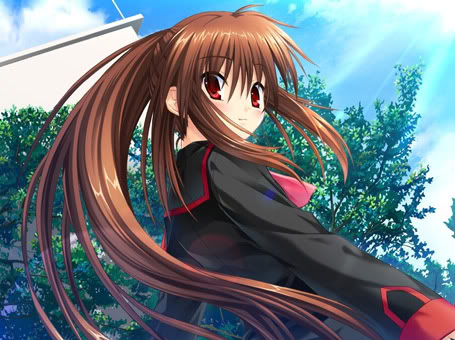
角色曲：RING RING RING!
是该结束了，漫长的容身之所，以及..
Little Busters是铃的家，是她唯一的容身之所。一直以来，对外界充满着恐惧。一旦遇到什么事情，都会不知所措，会偷偷地寻求理树的帮助。虽然，她不想让别人看到自己手足无措的样子，但是，大家都心知肚明，玲还是一个没有长大孩子，她需要大家的呵护，她需要大家的陪伴。Little Busters就是围绕在理树与玲之间形成的一个保护墙，以他们为中心，一直向前奔跑着。正义的联盟，惩治一切的邪恶，这就是Little Busters，把理树从无尽的黑暗之中拯救出来的Little Busters。
黑暗，仿佛没有黎明到来的一天。决望吞噬着一切，眼前没有一丝光明，没有未来，就像身处在无的空间里一样。看不到什么，听不到什么，仅仅难以忍受的痛苦，才使自己理解到，还有自身这个存在在这里。自己存在着，虽然是无的世界，但是，自己却在这无的世界里痛苦着。没有时间，没有尽头，一直深陷在黑暗之中不能自拔，这是永恒？还是结束？
仿佛阳光穿透乌云，曾经的无的世界开始变得清晰，那接近冰冷的世界，有一双手拉住了自己。无力的身边被带动着，向着不明所以的方向，向着不明所以的目的。虽然有过迷惘，但是，仍可以确信，这是自己的新生，远离无的世界，在新的世界里的新生。
一起去打棒球吧！一个随意的提议，使Little Busters的成员开始多了起来。虽然，大家也在为寻找新队员而努力，但是，真正来到这里的人，都是由理树带来的。仿佛大家开始以理树为中心不断地聚集。对于成员变得多了起来，大家都非常地高兴，这样一来，就有足够的人数可以打比赛了，这是希望，所以，要不断地努力，使这个计划成功。不过，有一个人却因为人数的增多而感到不安，那就是玲。怕见陌生人，一旦和自己搭话，就会非常地害羞，躲到理树的身后。她并不是讨厌对方，只不过是不知该如何应对。
总是寻求大家的帮助，是无论如何也不会成长的。一切都要靠自己的努力，才能达到自己的期望。所以，Little Busters的成员的增多，给玲创造了很好的交流空间。大家都非常地善良，都想和玲成为朋友。这是使玲走出第一步的必要条件。如果，对方是一个很难相处的人的话，对于胆怯的一方，是很难下定决心去接近他（她）的。而且，对方又是女孩子，身为同性，也会减少很多的隔阂与距离。
大家一起去合宿，渐渐地开始帮助对方，也接受对方的帮助，遇到问题也会想出解决方法，玲正在一步步地变得坚强。她虽然会因为自己的莽撞而吃到苦头，但是，她努力了，她坚强了，她也进步了。那所谓的想知道这个世界的秘密吗？一个个课题摆在理树与玲的面前等待着他们去解答。那倒底是预示着什么呢？是恶作剧吗？理树起初是这么认为的，不过，当他看到玲那开心的样子，还有她在解答课题时的不断成长，他也决定要一直帮助她直到最后。不过，最终的课题却让理树开始迷惘，他的选择决定了未来的结局，那么，他的选择又是什么呢？
曾经，一直敬仰的恭介，是他才使自己能够坚强地站起来，和他在一起，总是使自己感到非常地安心。不过，他是带给自己希望的人，他又是给自己带来痛苦的人。他当初所谓的为了重组Little Busters的目的，并不是如理树所想的那样，可以一直快乐地进行下去，而是为了终有一天的解散而作准备。理树认为，这一切都是恭介为了能够让玲独立而故意铺设的路，在铺设的过程中，不惜去牺牲Little Busters，也要让玲成长起来。最终，玲会离开，而Little Busters也将会不复存在。
玲的离开，Little Busters会消失吗？谦吾曾说过，Little Busters并不会消失，即使剩下自己一个人，Little Busters也将会一直存在下去。所以，玲离开后，大家依然在一起练习着棒球，不过，与以前不同的是，如今的气氛已经失去了往昔的团结，大家都各自怀揣着各自的想法不说出来。
另一边的玲，实在无法忍受异乡的排斥，那里没有她的朋友，那里没有人去理睬她，那里的老师对于自己产生怀疑。一切都是否定的，所以，玲的自闭心又开始严重起来。想要给朋友打电话，没有一个能够打得通，只有理树能够倾听自己的痛苦与孤独。想要回去，即使理树一次又一次地发送着加油，也实在是坚持不住了。
如果，就此逃走的话，未来等待的将是无尽的黑暗，如果，拉着的手放开的话，将会永远失去和玲在一起的机会。谦吾曾这样警告过理树，对于自己的选择要慎重考虑。不过，面对异常强大的恭介，就连最为可靠的谦吾也败下阵来，已经没有了退路，面前的选择只有一个，那就是和玲一同逃离这里。
当时想的只有离开这里而已，并没有考虑到以后的太多的事情。以为自己有一些积蓄，再加上打工的话，就能够和玲一起生活下去了。可是，理树忘记了自己的病，只要有一次发作，那么，雇佣他的人就不会再给他第二次机会，因为，谁也不想让一个病人为自己工作。还有，账户的冻结，使理树最后的希望也失去了。米总有吃没的一天，钱也终有减少的一天，即使每天都吃鱼，即使上山采野菜，也无法保证以后的生活能够这样平静地持续下去。
终于有一天，所谓的结束开始了。外面传来急速敲门的声音，现在唯一能做的就是和玲一起逃跑，可是，玲不想把猫们丢在这里独自离去，一番争执之后，玲挣脱开了理树的手。如果，拉着的手放开的话，将会永远失去和玲在一起的机会。紧握的手失去了，玲奔向无尽的黑暗，只剩下自己留在无的空间里。
一切又回到了过去的样子，那么，最后，自己还能够选择坚强地活下去吗？——从此坚强地活下去。
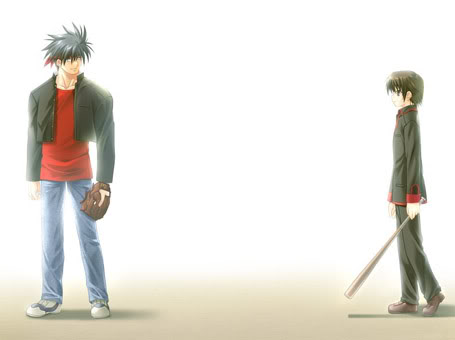
真人只要做回原来的自己就可以了。
真人
真人： 因为笨拙，因为单纯，会被别人嘲笑成为笨蛋。仅仅是思维方式与别人不同，却被当成是异类。所以，为了堵住那一张张嘲笑的嘴，不断地锻炼自己，使自己不断地变得强大。用拳头去降服别人，让他们不再开口。可是，这样做的后果仅仅是没有人再敢去嘲笑他，而他依然是孤身一个。自己是为了什么才会不断地锻炼自己，到了最后，已经忘记了最初的标，仅仅是为了强大而强大。变强的身体，依然空虚的内心，当有一天，恭介与玲出现在他的面前的时候，本以为又是一个挑战者，可是，他们却比自己想像的强大，最终还败下阵来。失败的自己会受到他们的嘲笑吧，以前强大的自己，已经不再是那个自己了。本是这样想着，可是，恭介并没有嘲笑他，而是让他加入到他们的Little Busters之中去，即使他再做出笨蛋的行为，恭介也不会说什么，而是一笑置之。真人只要做回原来的自己就可以了。同样的话语，从理树的口中说出，过去的回忆与现在交叠。已经失去的东西，如今又重新找到。真人成为了第一个加入到理树与玲重建的Little Busters的成员。
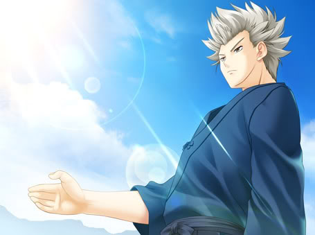
不能输的GAME
谦吾
谦吾： 做为了解恭介的计划并一直反对着他的谦吾。从开始就明确地拒绝了加入到理树与玲重建的Little Busters中去。他并不是讨厌理树与玲，而恰恰相反，他喜欢着他们，才不能加入到他们中去。他不想再让理树与玲重蹈过去的覆辙，这对于她们来说太过残酷，他们什么都不知道，却还要接受无尽的痛苦。所以，为了他们，他拒绝加入到Little Busters。不过，理树并不会就此放弃，他已经不再是过去懦弱的理树了，如今的他是重建的Little Busters新的领袖，所以，为了过去的Little Busters能够重生，他必须要让谦吾加入进来。用什么方法可以让他加入呢？棒球，玲不假思索地提出来。最终，理树决定用棒球与谦吾决一胜负。真是够讽刺的，上一次，理树和自己是队友，一起去挑战恭介，最后，自己失败了，使理树和玲遭受了痛苦。如今，理树成为了对手，如果自己输了的话，理树就会再一次重走老路，那么，最终的结果或许还会是无尽的黑暗与痛苦。所以，自己不能输，也不会输，带着这样的信念，本以为能够轻松胜利的，可是，当玲出现在投手台上的时候，一切计划全都打乱了，当意念终于无法支撑的时候，谦吾失败了。他跪倒在地上，想起了当初那个孤独的自己，是Little Busters把他带入到了新的快乐的世界里，那么，他也相信，理树与玲接下来，也能够用这个信念去挑战一切的困难与艰苦。谦吾也加入了。
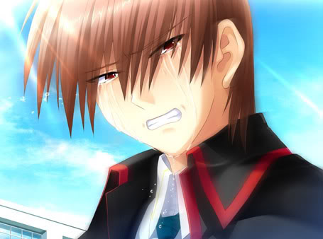
不能输的GAME
恭介
恭介： 作为自己最后的目的，恭介一直计划着要让理树与玲坚强起来，能够逃离这个静止的世界，去那个真正的世界里坚强地活下去。可是，玲与理树并没有他预期的那么坚强。他们最终无法忍受离开大家的痛苦而选择了逃避，可是，逃避的结果使得玲心灵上的创伤变得更加的深。恭介已经努力了，他所能做的事情已经做得差不多了，最后，就要靠理树与玲接下来的表现了。他会在背后默默地支持着他们。直到那一刻，理树与玲带着真人与谦吾来到他的面前，而他自己就像是当初的理树一样，由理树的手把他拉起来，在手与手相握的一刻，分离开始了倒计时。
又一次一起去打棒球，想要用这一刻来做为Little Busters的大家与理树和玲诀别的终曲，真人、谦吾、恭介相继地消失了，而这个世界也开始渐渐地崩坏。一切全都结束了，梦终有醒来的一天，理树与玲也终有不得不去面对现实的一天。
这样的结果真的好吗？能够接受吗？如果，就此放弃的话，一切就会按照最坏的结果进行下去，如果，不选择放弃，为了一丝的希望而不断地努力，或许奇迹能够发生。如今，变得坚强的理树与玲不会无助地接受悲剧的结局，他们要改变结局，用自己的双手来创造奇迹。这样一来，不会辜负真人、谦吾、恭介为他们的付出，而他们也终于有了能够回报他们的时候了。
新的故事，新的开始，未来的时间还很漫长，还有很多的事情等待着他们去探索，去发现，不过，即使未来会有什么变化，对于他们来说，只有一点是永远也不会变的，那就是，他们是Little Busters！
笹濑川佐佐美 的故事
笹濑川佐佐美（ささせがわ ささみ）声优：田宫トモエ /民安智惠
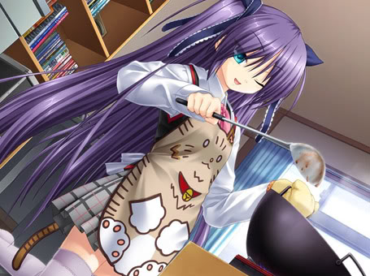
角色曲：猫と硝子と円い月
如果，那短暂的相遇..
思念一直记挂在心里，为了能够再次见到她，即使外面的世界再陌生，即使外面的世界再坚苦，也要挺下来。希望今天的分离，能够成为明日的相遇。为了那一天的到来，受人冷落，被同类欺付，忍饥挨饿，如今的日子没有了过去的温暖。那时，身为“母亲”的她，一直照顾着自己，每天会有热乎而美味的“饭菜”（猫粮），经常在充满阳光的地方晒太阳。那时的时光真的很幸福。可是，他们离开了那里，只剩下自己孤身一人，无家可归。为了能够再次和她相遇，开始踏上寻找的旅途，直到那一天——不喜欢猫，特别是黑猫，那时的记忆，给自己的心里带来负罪感。它一定是在恨自己，恨自己把它给丢下。家养的猫，一旦成为野猫，便很难活过两个星期，所以，或许，它此刻早已离开了这个世界，已经不再存在了。就像是有意保护着伤疤一样，不想让伤口被别人看到，所以，以前喜欢猫的心，开始变得讨厌起猫来。儿时，对猫敞开的心扉，如今开始紧闭，不想再次受到分离的痛苦，也不想回想起那时悲痛的回忆，所以，就让一切全都沉睡在心里吧。用心墙隔绝着当初的爱，用这面墙来保护自己伤痕累累的心。——如果，还有一次机会能够相遇的话，如果，那短暂的相遇，最后所要面对的依然是分离的话，那么，佐佐美会做何选择呢？
做为玲的宿敌登场，总是显出高傲的样子，给人一种威压的气势。由于总是和玲发生纠纷，所以，在大家的心里，佐佐美负面的印象要远远高于正面的印象。先入为主的印象，往往会主导一个人对于对方的看法。由于对其的了解并不是太多，所以，能够了解这个人的只有对于她（他）的初面印象。表面上看到的，并没有根据的，虽然很大程度上并不是真实，但是，由于彼此理解，对于一些因素上的障碍，很难达到完美，所以，如果没有一些事情上的契机，能够加深彼此的了解的话，是很难改观当初的印象的。佐佐美对于Little Busters很有抵触心里，一点是因为那里面有玲，还有一点就是他们的棒球队，本来练习的场地就是不很大，可是，这一次又有Little Busters占去了很大的空间，所以，她很不喜欢Little Busters，希望他们这些业余的，仅仅是玩玩的球队能够把场地让给她们这些专业的，有目标的球队，这样才是合理的。（她当时并不了解Little Busters的真正意义，不过，后来，她也加入了）不过，她也并不是讨厌全部的Little Busters的成员。其实，她也并不是真的讨厌玲，她的不坦率，把那种微妙的感情当成了讨厌，就像是小孩子明明喜欢，却因为害羞，说成是讨厌一样，而且，她和小毬的关系也很好，明明嘴上说着没办法，但是，微笑已然表明了一切。还有，她一直憧憬着谦吾，因为，他曾经帮助过自己，他成为了自己心中的英雄，白马王子。
距离并不能增进理解，只有走近，才能让彼此了解对方的想法。所以，当玲开始成长，当他们与佐佐美不断地相遇，又不断地发现她那新的一面的时候，大家对于她的看法也终于改变了。当校长视察学校的时候，他们想要了解一下运动场地的情况，便去问理树和玲他们的朋友的情况。结果，玲把校长带到了佐佐美所在的垒球部。当时，理树心里一寒，如果，她把Little Busters的情况全都说出来的话，他和玲的一切努力也就全部付诸东流了，而佐佐美也达到了她那报复的目的。不过，理树对于佐佐美的看法太过偏激，佐佐美自始至终也没有说出过那样的话，所以，当事情结束后，理树也不禁认为，佐佐美其实也并没有他想的那么坏（根本就不坏！）。还有佐佐美和小毬一起照顾受伤的猫，当玲提出要和佐佐美做朋友，她当时所表现出的既害羞，又惊慌失措的样子，使大家终于知道，佐佐美也是一个善良的女孩，只不过，她不善于表达出自己的内心的想法，总是口是心非。
那是思念，那是梦，那是最后的时光。
那是一个梦的世界，那个世界与当初真人他们所创造的世界有相同点，又有不相同点。那个世界并不是那么完美，有很多的漏洞，那个世界并不能承受太多，所以，会相继有人从那里面退场。
佐佐美变成了黑猫。她明明是最不喜欢黑猫的，如今，她竟以黑猫的身份出现在理树的面前。只有在理树的房间里，她才能变回原来的样子，也只有在理树的面前，她不会再一次变成猫。不过，如果她一离开理树的房间，如果理树的房间有别人进入的话，她又会变成黑猫，而她所说的话，在对方听来，也只不过是喵喵的猫叫，也只有理树能够听得懂她在抱怨什么？这是什么情况？很神奇，也很难让人相信。不过，经过那个世界的事情，理树已经习惯了这种超现实的现象，所以，他认为，这个世界就像当初的那个世界一样，一定是由于某个人的思念或是怨念而形成，这是为了能够实现他的愿望而形成的另一个世界。那么，如果想要从这个世界里走出来的话，就要找到创造这个世界的人。他是出于什么目的才创造了这个世界呢？理树相信，这是由于思念，而不是由于怨念。
一个人的力量是很难解开谜题的，所以，理树便开始寻求他人的协助。他起初找到的是小毬，后来又把玲拉了进来，不过，当她们得知这件事情的时候，她们竟然在第二天消失了。消失的不仅是她们俩个，也知道（真的知道？）这件事情的真人、发现一丝端倪美鱼，洞察力非常地强大的来谷，都从这个世界里消失了。那么，这一定是由这个创造这个世界的人所为，他是不想让更多的人知道这件事情吗？理树开始迷惘了，倒底是谁创造了这个世界，又是什么的愿望形成了这个世界呢？ 。
嫌疑人就在这个世界里，也很有可能是理树自己，也很有可能是佐佐美，或许是他们在无意间许下的这个愿望，只不过，他们还没有发现而已。那么，寻找那个创造这个世界的人，成为了他们的任务。
寻找的过程中，理树想起了一件事情，那就是佐佐美一直憧憬着谦吾，那么，是不是佐佐美为了能够和谦吾在一起，而许下的这个愿望呢？这很有可能，不妨试一试，于是，理树便想要帮助佐佐美和谦吾去交谈一次。不过，他当时并不了解佐佐美的感情，而且，最终，佐佐美被拒绝了，还知道了，那时帮助她的人，其实并不是谦吾而是理树。（关于佐佐美对于谦吾的感情，我认为就像她说的那样，仅仅是憧憬，而不是爱。憧憬只能远观，走近了，也就失去了那份美丽。那就像是对于美好的梦境的渴望一样，当知道了那仅仅是印象的产物的话，也就失去了当初的价值。佐佐美之所以会去见谦吾，更多的是要了解自己真正的想法，她曾说过，自己的心里的石头终于落了地，那时，她已经了解了什么是爱，也知道了谁才是自己爱着的人）
其实，问题的答案早就已经摆在理树的面前，也给了他很多的提示。佐佐美关于黑猫的回忆，那个一直陪在佐佐美身边的黑猫，还有，明明已经告之了自己就是创造这个世界的人，却被理树忽视的梦境。一切都是由黑猫而起的，那么，这样一来，答案自然就是黑猫了。
世界正在一步步地消失，留给他们的时间已经不多了。答案已经不用再去深想了，答案只有一个，这个世界里，剩下的只有佐佐美和理树俩个人，还有那个黑猫。那只黑猫通过梦境对于记忆的重演，使理树知道，它就是佐佐美过去丢失的黑猫，它如今又回来了（应该是早就回来了）。
那只黑猫恨自己吗？它创造了这个世界的目的又是什么呢？佐佐美不想让自己所爱的人卷进这未知的事件里，所以，她让理树回到现实的世界。可是，理树又怎能丢下她呢？他又回到了那里，和佐佐美一同去面对接下来所要发生的事情，那是好的事情，还是坏的事情，是一个未知数。
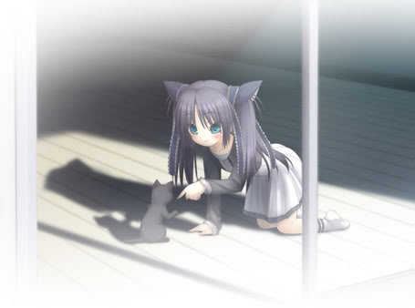
愿望也仅仅是在最后的时光，能够和她在一起。
打开的心扉，也打开了那道无形的墙，佐佐美再一次，真正意义上与那只黑猫相遇了。它并没有恨她，而它的愿望也仅仅是在最后的时光，能够和她在一起。时间所剩无几，但是，在这最后的时光里，黑猫终于得到了它想要的幸福，虽然相聚的时光短暂，虽然走了很远的坚辛的道路，但是，这一切都是为了这最后的时光，为了能够和它的“母亲”相遇，能够躺在她温暖的怀里，面对一切的终结——它并没有后悔过，它很幸福。
二木 佳奈多 的故事
二木 佳奈多（ふたき かなた）声优：铃木惠子/ 凉森ちさと
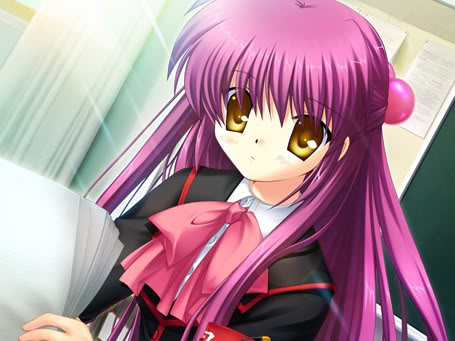
角色曲：Will&Wish
即使再痛恨命运、即使再痛苦，结果也是无法改变的。
自从来到这个世上，就注定了未来的命运。作为比较的道具，明明是姐妹，明明是亲人，所受到的待遇却是不同的。谁做的好，谁就会得到奖励，谁做得不好，谁就会受到惩罚。没有一丝公平可言，也没有一点良心之感。就像是即使在天空中飞翔的风筝一样，即使飞得再高，即使飞得再远，也会有一条线把她们劳劳地拴住，永远也无法逃离他们的魔掌。妹妹所承受的痛苦，自己的心也会疼痛，因为，她是自己目前唯一最亲的人，她们所遭受的待遇不同，但是，她们的命运是相同的。在一片场地上，身为姐妹的人，不得不为了别人的目的而互相摧残，明明彼此心里都非常地痛苦，但是，弱小的她们，没有一点办法去反抗，只能独自忍受着不公平的命运。如果，这样一直下去的话，姐妹之间的关系也将会有一天而破裂。所以，为了能够守护住这唯一的一丝希望，姐妹便立下了约定，只要有这个约定，她们即使再恨对方，终有一天，她们也会手与手牵在一起，共同踏出这个劳笼。不过，时间会改变一切，当初的约定，虚假的演戏，最后渐渐地变成了真实。明明是假的吵架，却变成了真的争吵，明明想要好好的对她，可是，她已经不再了解自己的真心。如果，她不能理解自己的话，那么，就让她恨自己吧。这样一来，她就有了前进的动力，这是她所能做的最后的事情。生活一直持续下去，舍弃了太多的东西，最终，连自己的心全部都舍弃了，自己就成为他们操纵的人偶一直下去吧。即使改变什么，也不会有任何地效果。即使再痛恨命运、即使再痛苦，结果也是无法改变的。所以，只要这样一直不变地持续下去就可以了。这样好吗？这样好吧……
冷淡，面无表情，做什么事情都非常地板直，没有一丝变通。在大家的眼里，她就像是一个没有感情的人一样。对于别人总是不理不睬，很少言语，即使搭上话，也多是耶揄的口气，话中带刺。不过，她并不是对于每个人都那种样子。她对库特就很好，她只让库特看见她那不想让别人看见的另一面。她不得不这么做，那表面的面具并不是她想要戴上的，只是她不得不去戴。因为，她要做一个优秀的人，无论哪个方面，都要达到他们的要求，这样一来，才能满足他们的虚荣，成全他们的计划。她只是他们的一步棋子，其他的就什么都不是了。
痛苦的回忆，与身上那永远也无法抹去的伤疤一起，一直折磨着她。那时的与妹妹的回忆，如今的无法改变的命运。都将儿时的愿望粉碎得彻底。在别人的眼里，自己是一个没有人性的怪物，在妹妹的眼里，自己是无法原谅的仇人，在家里，也没有一个人把自己当成亲人来对待，他们只不过用表面的美好生活来满足她，成为能够操纵她的绳索，但是，即使吃到再好的东西，即使穿再好的衣服，如果不能与妹妹一同分享的话，一切也就全都失去了意义。
如果舍弃自己的未来，妹妹就可以得到拯救。面对大人们的威胁，面对无助的自己，面对无法改变的命运，那么，就用自己的未来来换取妹妹的幸福吧。这样的决定，正合那些魔鬼们的意愿。他们想方设法要让她做出这个决定，他们一直在等着这一刻的到来。他们用所谓大人的诡计，让身为孩子的她屈服，他们还自己在一边洋洋得意，庆祝自己的胜利。他们只不过是弱小的人，用扭曲的行为来蔽护那颗弱小的心。弱者欺付更弱者以达到心灵上的满足，这就是他们的现状，只不过，他们没有想到，未来，他们依然是弱者，而被欺付的弱者将会成为强者来反抗他们。这是他们无法改变的命运。他们会一辈子成为弱者，紧抱那扭曲的心灵，寻找发泄的工具。
自小时候起，就没有体会过何为家人温暖，也不知道何为家人，曾经唯一的妹妹也离自己远去。看到别的孩子开心地谈论着父母的事情，只有自己孤单一个人。自己所做的一切，即使做得再好，也无法得到父母的赞赏，他们所体会到的东西，自己却无法去体会。自己知道的仅仅是学习，学习，再学习。并不是为了父母，也不是为了亲人，而是为了那些弱小的操控者学习。这样的学习快乐吗？
曾以为将会永远也没有朋友，一直孤独地活下去。可是，自从和理树相遇以后，一切都开始渐渐地改变，妹妹也不再痛恨自己，而是了解了一切，所以，自身以外的世界都在不断地改变着，不变的只有自己而已。为了守护，而无法改变，即使有改变的想法，以自身的力量也无法做出什么。今天的快乐，将会成为明天失去的痛苦，所以，不拥有也就不会有失去。就这样一直持续下去就好了。
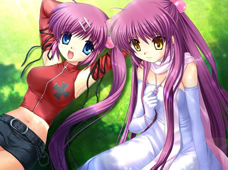
两个人的话，什么都会跨过去的。
不过，放开伸过来的手，不寻求任何帮助，也不求任何的改变，一切都将延着他们预定的计划走下去。这样一来，自己会幸福吗？和他们的相遇，教会了她拥有的快乐，如果怕失去的话，那么，就要去守护。即使未来等待自己的结局并不是如自己所想的那样美好，自己也不会后悔，因为，自己不会再原地踏步，而是勇于追求。只要向前看，才不能迷失方向，向着自己所期望的未来前进。未来是要由自己去改变的，而不是静静地等待的。未来也不是注定的，而是能够由自己的力量去改变的。争取未来，创造未来，才能够拥有未来。未来并不遥远，未来只在伸手之间，等待自己去争取。
话说，最后的行动真是痛快淋离，凭借大家的帮助，终于改变了未来。相信，接下来的日子里，他们会由自己的手，来创造属于他们自己的未来。
朱鹭户 沙耶（彩） 的故事
朱鹭户 沙耶（彩）（ときど さや （あや））声优：樱井浩美/风音
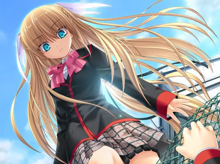
角色曲：駆ける
一个神秘的少女，出现在夜间的学校。
家，没有真正意义上的家，一直在不同的国家之间穿梭，生活的地方也仅仅是在父亲工作的地方。接触的人，多数都是病人或是父亲的同事。没有一个所谓的同龄的朋友，也没有体会过别人认为普通得再普通不过的生活。那是一面透明的墙，墙的里面，是战火纷争的世界，那里面有血腥、有残忍、有死亡、有无奈。那个世界里，没有一丝的安宁可言，那个世界也没有安心的一天。今天的安静，预示着明天的暴风雨的来临，今天的快乐，或许就会成为明天的痛苦。在这里生活，随时都很有可能失去生命。更可悲的是，在这里生活的人，对于这种悲惨的生活已经麻木，动荡仿佛成为生活的必要要素之一，已经成为了生活的一部分。死亡就像是每天都要吃饭睡觉一样正常，没有什么值得太过在意的事情，这就是这里面的世界。而透明的墙外面的世界却与这里面不同。那是几乎无聊的每一天。上学、上班、生活、奋斗。按着规划好的道路向着自己的梦想前进。从那个世界里，看向里面的世界，会觉得很不可思义，那平常而又普通的每一天，被如此的画面震撼着。想要做些什么，知道了别人的，或是自己的苦痛，才会了解到自己现在所处的世界是多么的幸福。外面的人想要进去，想要拯救那些人，给他们像自己一样的平常而又普通的生活，而里面的人，也想出去，那长途的跋涉已经使身心俱疲，眼前没有一丝光明，都是无尽的黑暗。想要摆脱掉这样没有尽头的生活，想要过着充满阳光与欢笑的生活，因为，那平常的每一天，都是如此的珍贵，那每一分每一秒都是以后美好的回忆。
从一个世界走向另一个世界，会对那个陌生的地方怀有不安与期待。那里的人，会用什么样的眼光去看自己，那里的人，会不会成为自己的朋友。在那里的生活，会不会产生排斥。一个个疑问涌上心头，怀着忐忑放眼望去。那里，是自己一直希冀的生活，那里，有着自己一直失去的东西，所以，要把那些失去的全部补回来，用自己的身心去体会这个世界。可是，明明交到了朋友，明明未来充满了希望，一切的开始，又从那里结束。一场事故结束了一切，冰冷吞噬着体温，这个世界从有渐渐地被无取代。自己甘心吗？就这样结束一切，真的甘心吗？
一个神秘的少女，出现在夜间的学校。明明是想要去取笔记本的理树正因为这次相遇，开始了他不平静的生活。那是无意间误闯进的世界。那个世界把自己从这里面隔开，与他日常的生活隔离。从此，一个以前并不知道的，新的世界，新的体验开始了。
追杀？明明是去还她丢失的东西，却被她叫到学校的楼顶，把他逼到围栏处，而那围栏又那么顺其自然地断裂，理树就这样险些掉了下去。幸好一只手攀在上面，才免于一死。不过，这并不代表接下来就平安无事了，少女手里拿着枪，指向他。他已经走投无路，前进，后退都是死，而正在犹豫的时候，手也终于无法支撑掉了下去。真的就这样死了吗？本以为没有希望的时候，真人出现在下面，他相信真人的肌肉，所以，他就这样把一切都交给了真人掉了下去，而结果，也如他所愿，真人接住了他。这只是一个开始，在活动室，打开门，有条绳子缠上了他，即使再挣扎也是无济于事，只会让绳子越勒越紧，正以为这回是逃不过去的时候，谦吾又出现了，马上救下了他。两次都由可靠的朋友相救，那么，如果第三次再有这样的危险的话，还会有人出现救他吗？明明以前一直过着普通的生活，为什么仅仅在一夜之间，一切全都改变了？到处充满着恐惧，又不让把这件事情和别人说，这样一来，他的朋友也会卷到这个事件里去。所以，只要由他一个人面对危险就可以了。接下来，是电线的袭击，幸好理树处事冷静，把危险化于无，这一次，终于由自己救了自己。
还会再有第四次，第五次，第六次？一想到这些，理树就沉浸在痛苦与不安之中，第一次有真人相救，第二次由谦吾相救，第三次由于运气与当时出奇的冷静，这三次也终于躲过了。可是，即使再强的人，也会有失误的时候，一个个危险接连而至的话，只要有一次失误，只要有一次没有别人相助，那么，他的命就没了。一想到这些，理树就开始怀念起过去与朋友们度过的平常而又幸福的每一天了。
不过，事情并没有理树所想的那样悲观，当少女，也就是沙耶出现在他的房间里的时候，他起初是一惊，以为这一次是难逃一劫，不过，听沙耶说，她已经不会再杀他了，只要他与自己合作，那么，他就能成为她的搭档，一同去学校下面的迷宫去寻宝。其实，对于理树来说，寻宝什么的并不重要，他只想要快些结束这不同寻常的旅程，赶快回到本属于他的日常生活中去。所以，他答应了沙耶的提议。
地下寻宝的过程断断续续，只能由夜间进行，白天还要回到日常中去。不然的话，别人会起疑心，会引起不必要的麻烦。所以，一天两层的探索，其中的迷题也全都由理树一个人解决了。如果，仅仅是以探宝的心情去和沙耶在一起的话，理树也不会在协同行进的过程中，发现了沙耶那冰冷的外表，给人一种帅气的样子之外，那不为人知的另一面。起初，理树认为沙耶头脑聪明，沉着冷静，不过，在与她的接触之中，他又发现，她也有女孩子的一面（本来就是女孩子），那一面是如此的可爱，又如此的笨拙，不过，再笨拙，都会让理树的内心产生悸动。是从什么时候开始的呢？理树与沙耶的探宝并不像以前那样被迫与痛苦，开始充满期待与欢喜，他想要和沙耶在一起，即使在白天，他也一直在寻找着沙耶的身影。他喜欢上了沙耶。如果，探宝能够一直进行下去就好了，可是，一旦任务结束，沙耶就不得不离开这里，回到她的世界里去，那样一来，他们就不得不面对分离。所以，为了不让自己抱有遗憾，理树对沙耶告白了。本以为或许会引起她的讨厌，却没有想到，她的表现是如此的慌张可爱。她自己乱了阵脚，射击的命中率也很低，她失去了以前的冷静，开始浮躁起来，她这种表面的原因可想而知。如果不在意理树的话，对于理树的告白也就不会有任何的感觉了；正因为是在意，所以，才会不知所措，不知该如何应对他的表白。其实，沙耶也喜欢着理树。
第八层，是一个终点，沙耶从这里消失，一切又全都恢复了平静，仿佛什么事情都没有发生过一样，仿佛沙耶并不曾存在一样，只留下理树一个人站在这里，渐渐地失去意识。沙耶消失了，要找回她，所以，要去那个入口，把谦吾与真人也都叫上，已经顾不得那么多了，当他们来到入口的时候，已经找不到密道了。难道曾经发生过的事情，仅仅是一场梦吗？
重置一切，重新开始。
一次次地重复着，一次次地死去，目的只有一个，那就是密室底层的秘宝。那个秘宝是什么呢？设置了这么多机关，一定是非常有价值的东西。其实，对于沙耶来说，那个珍宝是非常重要的存在。那是她可以取回过去的希望。她不想失去一切，所以，要在这里重新找回。当她与理树来到第八层的时候，当他们终于能够得到秘宝的时候，取得等于失去。当用枪指向自己扣动扳机的时候，这个游戏就结束了。这个提示不仅说过一次。那么，当沙耶终于来到那个秘宝面前的时候，一切全都要结束了。
和理树在一起的时间，虽然短暂，但是却非常地幸福、快乐。今天，就要在这里和他分离了，虽然泪水止不住地流了下来，可是，这并不代表结束。扣动扳击，梦将会醒来，而自己也将回到过去，在那里，她将会再次与理树相遇。这一次，不会再错过彼此，而是以此为起点，让她的回忆，伴着她的未来，与理树一同去创造，那属于她们的，幸福而富有希望的未来。
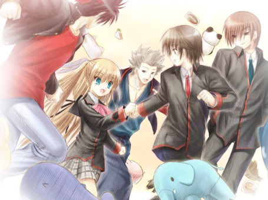
这一回，彩会把握住她的幸福
其实，沙耶，也就是彩回到了过去，这不就是又一次的重播吗？一次次地失去，一次次地重新争取，相信，这一回，彩会把握住她的幸福，而不会让重播再次发生。（那迷宫游戏，死了十多次才终于找到了秘宝，面对沙耶的吐槽，其血腥味也被欢乐所取代）